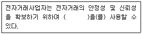
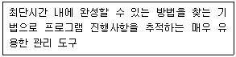
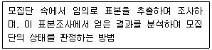
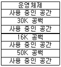

사무자동화산업기사 (2011-08-21 기출문제)
1과목: 사무자동화 시스템
1. 하이시에라 표준안(High Sierra specification)은 무엇에 관한 표준안인가?
- 멀티미디어
- CD-ROM
- PC-MPC
- 컴퓨터 그래픽
(정답률: 66%)

2. 사무자동화를 추진하는데 있어 먼저 적용할 특정 부문을 선정하여 사무자동화를 추진해가는 접근 방식은?
- 공통과제형 접근방식
- 전사적 접근방식
- 부문 전개 접근방식
- 업무별 접근방식
(정답률: 64%)
3. 다음 중 워드프로세서의 기본 기능으로 가장 거리가 먼 것은?
- 데이터 처리 기능
- 문서 인쇄 기능
- 문서 보관 기능
- 문서 편집 및 교정 기능
(정답률: 62%)
4. 사무자동화를 보다 활성화하기 위한 사무처리제도 개선 방안에 적합하지 않은 것은?
- 표준화
- 간소화
- 정형화
- 폐쇄화
(정답률: 89%)
5. 컴퓨터의 자원을 관리해주는 시스템 프로그램을 무엇이라 하는가?
- 인터프리더
- 컴파일러
- 통신 관리 시스템
- 운영체제
(정답률: 83%)
6. 서버에 저장되어 있는 파일이나 데이터를 보호하는 방법이 아닌 것은?
- 핫 픽싱(Hot Fixing)
- 파일 복제 서비스(File Replication Service)
- JPEG(Joint Photographic Expert Group)
- RAID(Redundant Array of Inexpensive Disk)
(정답률: 83%)
7. 다음 중 표시장치가 아닌 것은?
- CRT
- LCD
- PDP
- Track-ball
(정답률: 90%)
8. 데이터베이스 자체를 생성(CREATE)하거나 변경(ALTER)하는 목적으로 사용하는 언어는?
- DCL
- DDL
- DML
- DBMS
(정답률: 55%)
9. 다음 중 세계최초의 상업용 컴퓨터는?
- UNIVAC
- EDSAC
- EDVAC
- ENIAC
(정답률: 54%)
10. 전자 우편에서 인증, 메시지 무결성, 송신처의 부인 방지, 데이터 보안과 같은 암호화적 보안 서비스를 제공할 수 있는 것은?
- 세션키 분배방식
- POP3
- S/MIME
- SMTP
(정답률: 73%)
11. 뉴미디어의 분류방법으로 정보를 전달하는 매체를 기준으로 한 분류방법에 속하지 않는 것은?
- 데이터계
- 무선계
- 유선계
- 패키지계
(정답률: 67%)
12. 기업에서 많이 사용되고 있는 ERP는 다음 중 어떤 종류에 속하는가?
- 운영체제
- 데이터베이스 관리시스템
- 응용 시스템
- 통신전용 소프트웨어
(정답률: 57%)
13. 다음 중 마이크로필름 저장장치의 장점이 아닌 것은?
- 저장비용이 저렴하다.
- 고밀도 기록을 할 수 있다.
- 매체를 기록하는 시간이 짧다.
- 저장된 매체의 장기보전이 가능하다.
(정답률: 58%)
14. 다른 기종간의 네트워크에서 파일을 이용하기 위한 파일 시스템용으로 사용하는 것은?
- TELNET
- HTTP
- FTP
- NFS
(정답률: 36%)
15. 다음 ( ) 안에 알맞은 것은?

- 암호제공
- 방화벽
- 전자화폐
- 인증화폐
(정답률: 59%)
16. 사무자동화 시스템의 목적에 가장 거리가 먼 것은?
- 욕구의 다양화에 대처
- 처리의 신속화와 정확화
- 처리의 투명화
- 비정형적 업무의 자동화
(정답률: 78%)
17. 다음 중 MPEG의 설명으로 옳지 않은 것은?
- 정지영상 압축에 대한 ISO국제 표준안
- 동영상 압축에 대한 ISO국제 표준안
- 손실압축 기법에 포함
- MPEG-1, MPEG-2, MPEG-4 등이 해당됨
(정답률: 59%)
18. 다음 중 충격식 프린터에 해당하는 것은?
- 라인 프린터
- 레이저 프린터
- 열전사 프린터
- 잉크젯 프린터
(정답률: 76%)
19. 2.3 GHz 주파수 대역의 고속 휴대용 인터넷 서비스는?
- WiBro
- Bluetooth
- DMB
- WCDMA
(정답률: 85%)
20. 하드 디스크 드라이브(HDD)와 비슷하게 동작하면서 기계적 장치인 HDD와는 달리 반도체를 이용하여 정보를 저장하는 것은?
- USB메모리
- CCD
- DVD
- SSD
(정답률: 63%)
2과목: 사무경영관리 개론
21. 관리의 행동 과정 중 사무 계획화에 속하지 않는 것은?
- 예측
- 방침설정
- 재원할당
- 절차
(정답률: 62%)
22. 산업안전보건기준에 관한 규칙에 의거 근로자의 이상기압으로 인한 건강장해의 예방을 위해 정의한 이상기압의 기준은?
- 압력이 제곱센티미터당 0.5그램 이상인 기압
- 압력이 제곱센티미터당 1그램 이상인 기압
- 압력이 제곱센티미터당 0.5킬로그램 이상인 기압
- 압력이 제곱센티미터당 1킬로그램 이상인 기압
(정답률: 60%)
23. 구체적인 목적이나 절차, 작업 방법에 대해서 품질표준을 정하여 관리하는 활동은?
- 사무 재고관리
- 사무 품질관리
- 사무 보증관리
- 사무 공정관리
(정답률: 63%)
24. 다음 내용이 설명하는 사무통제를 위한 관리 도구로 올바른 것은?

- 절차도표
- 간트 차트
- 자동독촉제도
- PERT
(정답률: 65%)
25. 다음은 사무량 측정 방법 중 어떤 것을 설명한 것인가?

- 관측법
- WS(Work Sampling)법
- CMU(Clerical Minutes per Unit)법
- PTS(Predetermined Time Standard)법
(정답률: 84%)
26. 사무표준화의 목적과 관계가 없는 것은?
- 사무 용어, 개념, 부서별 평가기준을 통일할 수 있다.
- 사무원들의 공동관심사에 대한 이해가 촉진된다.
- 사무원들을 능력별로 활용할 수 있다.
- 사무원의 생산성 향상으로 비용이 증가된다.
(정답률: 70%)
27. EDI의 특징이 아닌 것은?
- EDI는 데이터 통신망을 이용하는 컴퓨터와 컴퓨터간의 통신방법이다.
- EDI는 지역적으로 멀리 떨어진 곳의 회의를 주관하는 컴퓨터 처리방식이다.
- EDI에 의해 전달되는 데이터는 구조화되어 있고 자체 처리가 가능한 표준 양식이다.
- EDI에서 전자문서교환 대상은 수신한 컴퓨터가 직접 처리하기 때문에 변환과 재입력이 필요 없다.
(정답률: 70%)
28. 정보통신망에서 개인정보의 안전성 확보에 필요한 기술적 조치에 해당하는 것은?
- 개인정보의 안전한 취급을 위한 내부관리계획의 수립 및 시행
- 개인정보 관리책임자의 의무와 책임을 규정한 내부 지침 마련
- 침해사고방지를 위한 보안 프로그램의 설치 및 운영
- 개인정보보호를 위한 정기적인 자체 감사 실시
(정답률: 68%)
29. 다음 중 프로그램 저작자의 권리라고 볼 수 없는 것은?
- 공표권
- 성명 표시권
- 동일성 유지권
- 개발 이용권
(정답률: 45%)
30. 사무관리규정상 서식의 칸 중간에서 기재사항이 끝나는 경우 어떤 표시를 하여야 하는가?
- 끝
- 이하빈칸
- 이하여백
- 이하끝
(정답률: 62%)
31. 자료를 컴퓨터 등의 저장매체에 저장하는 데이터베이스의 특징으로 옳은 것은?
- 자료의 의존성이 발생한다.
- 자료의 비호환성이 존재한다.
- 자료의 공유성이 결여되어 있다.
- 자료의 공유를 전제로 한다.
(정답률: 56%)
32. 다음 중 라인조직의 단점이라고 볼 수 없는 것은?
- 상위자에게 너무 많은 책임이 주어짐
- 조직구성원의 의욕과 창의력 저하
- 독단적인 처사에 의한 폐단을 면하기 어려움
- 책임과 권한의 구분이 명확함
(정답률: 72%)
33. 프로그램배타적발행권이 설정행위에 특약이 없는 경우의 존속 기간은?
- 설정행위를 한 다음 날부터 1년간 존속
- 설정행위를 한 다음 날부터 3년간 존속
- 설정행위를 한 날부터 1년간 존속
- 설정행위를 한 날부터 3년간 존속
(정답률: 70%)
34. 사무관리 기능으로 가장 거리가 먼 것은?
- 경영활동의 보조 기능
- 정보처리 기능
- 신속한 의사결정 기능
- 조직체의 각 활동을 결합하는 기능
(정답률: 48%)
35. 공공기록물 관리에 의거 전자기록물로 구성되어 있는 기록물철의 분류번호는 어떻게 관리하는가?
- 해당 전자기록물철의 등록 정보로 관리
- 해당 전자기록물철의 접수 정보로 관리
- 해당 전자기록물철의 생산 정보로 관리
- 해당 전자기록물철의 분류 정보로 관리
(정답률: 47%)
36. 작업의 정확도를 향상시키기 위한 표준은?
- 양표준
- 질표준
- 양 및 질표준
- 시간표준
(정답률: 60%)
37. 사무실의 업무내용에 따라 분류할 때 데이터 처리업무의 사례가 아닌 것은?
- 문서 작성
- 분류
- 협의
- 인쇄
(정답률: 47%)
38. 전년도 말 기준 직전 3개월간의 일일평균 이용자수가 5만명 이상인 경우 주민등록번호를 사용하지 아니하고도 회원으로 가입할 수 있는 방법을 제공하여야 하는 것은?
- 전자상거래 서비스, 게임 서비스, 포털 서비스
- 전자상거래 서비스
- 게임 서비스
- 포털 서비스
(정답률: 78%)
39. 문서관리의 기본원칙과 거리가 먼 것은?
- 능률화와 절감화
- 표준화와 간소화
- 신속화와 정확화
- 전문화와 인쇄화
(정답률: 77%)
40. 다음 중 사무계획의 장점이 아닌 것은?
- 인적 · 물적 자원 및 시간의 낭비를 막을 수 있다.
- 사무량을 평준화시킴으로서 혼란과 낭비를 제거할 수 있다.
- 부하직원에 대한 평가가 주관적으로 이루어지게 되므로 사무원의 적재적소 배치가 가능해 진다.
- 사무기기 및 자동화설비의 구입을 비교적 쉽게 할 수 있다.
(정답률: 58%)
3과목: 프로그래밍 일반
41. C 언어에서 문자형 자료 선언시 사용하는 것은?
- int
- float
- char
- double
(정답률: 66%)
42. 프로세스가 일정 시간 동안 자주 참조하는 페이지들의 집합을 의미하는 것은?
- PCB
- Thrashing
- Locality
- Working Set
(정답률: 81%)
43. 기계어에 대한 설명으로 옳지 않은 것은?
- 컴퓨터가 직접 이해할 수 있는 언어이다.
- 기종마다 기계어가 다르므로 언어의 호환성은 없다.
- 0과 1의 2진수 형태로 표현되며 수행 시간도 빠르다.
- 프로그램 작성이 용이하다.
(정답률: 77%)
44. C 언어에서 사용하는 기억클래스에 해당하지 않는 것은?
- static
- register
- internal
- auto
(정답률: 78%)
45. C 언어에서 나머지를 구하는 잉여 연산자는?
- #
- &
- %
- @
(정답률: 80%)
46. 시스템 프로그래밍 언어로 가장 적합한 것은?
- COBOL
- FORTRAN
- C
- PASCAL
(정답률: 80%)
47. 순서 제어 구조에서 묵시적인 방법에 해당하는 것은?
- 반복문을 사용하는 방법
- GOTO문을 사용하는 방법
- 연산자의 우선 순위에 따른 수식 계산
- 연산자의 순서를 프로그래머가 변경하는 방법
(정답률: 59%)
48. 원시 프로그램을 컴파일러가 수행되고 있는 컴퓨터의 기계어로 번역하는 것이 아니라, 다른 기종에 맞는 기계어로 번역하는 것은?
- Debugger
- Preprocessor
- Cross Compiler
- Linker
(정답률: 67%)
49. 예약어에 대한 설명으로 옳지 않은 것은?
- 예약어는 변수 명으로 사용될 수 없다.
- 번역 과정의 속도가 느리다.
- 오류 회복이 용이하다.
- 프로그램의 신뢰성이 향상된다.
(정답률: 54%)
50. HRN 스케줄링 기법에서 우선 순위를 구하는 방법은?
- 대기시간 / 서비스를 받을 시간
- 서비스를 받을 시간 / 대기시간
- 서비스를 받을 시간 / (대기시간+ 서비스를 받을 시간)
- (대기시간+ 서비스를 받을 시간) / 서비스를 받을 시간
(정답률: 74%)
51. 구조적 프로그램의 기본 구조가 아닌 것은?
- 순차구조
- 반복구조
- 일괄구조
- 선택구조
(정답률: 75%)
52. 객체지향 개념에서 이미 정의되어 있는 상위 클래스(슈퍼 클래스 혹은 부모 클래스)의 메소드를 비롯한 모든 속성을 하위 클래스가 물려받는 것을 무엇이라 하는가?
- Abstraction
- Method
- Inheritance
- Message
(정답률: 75%)
53. 중위 표기의 수식 “A * ( B - C )"를 전위 표기로 나타낸 것은?
- * A - B C
- A B C - *
- A * B C -
- A B - C *
(정답률: 61%)
54. 프로그램 수행 순서로 옳은 것은?
- 원시프로그램→ 목적프로그램→ 컴파일러→ 링커→ 로더
- 원시프로그램→ 로더→ 목적프로그램→ 링커→ 컴파일러
- 원시프로그램→ 컴파일러→ 목적프로그램→ 로더→ 링커
- 원시프로그램→ 컴파일러→ 목적프로그램→ 링커→ 로더
(정답률: 86%)
55. 언어번역 프로그램에 해당하지 않는 것은?
- 컴파일러
- 인터프리터
- 로더
- 어셈블러
(정답률: 57%)
56. C 언어에서 사용하는 이스케이프 시퀀스에 대한 의미가 옳지 않은 것은?
- \r : carriage return
- \n : new page
- \b : backspace
- \t : tab
(정답률: 62%)
57. 고급 언어로 작성된 프로그램을 구문 분석하여 그 문장의 구조를 트리로 표현한 것으로 루트, 중간, 단말 노드로 구성되는 트리는?
- 구문 트리
- 파스 트리
- 어휘 트리
- 문법 트리
(정답률: 88%)
58. 다음 그림과 같은 기억장소에서 16K를 요구하는 프로그램이 두 번째 공백인 16K의 작업 공간에 배치되는 기억장치 배치 전략은?

- First Fit
- Worst Fit
- Best Fit
- Second Fit
(정답률: 64%)
59. C 언어에서 문자열 출력 함수는?
- main( )
- gets( )
- puts( )
- getchar( )
(정답률: 46%)
60. 운영체제의 목적이 아닌 것은?
- 신뢰성 향상
- 반환시간 증가
- 사용가능도 향상
- 처리량 향상
(정답률: 78%)
4과목: 정보통신 개론
61. 통신망의 데이터 교환방식의 유형에 속하지 않는 것은?
- 신호교환
- 패킷교환
- 메시지교환
- 회선교환
(정답률: 47%)
62. 정보통신시스템을 구성하는 경우에 이중화된 장치나 선로를 적용하는 것은 다음 중 어떤 기능과 가장 밀접한 관련이 있는가?
- 효율성
- 신뢰성
- 용이성
- 교환성
(정답률: 40%)
63. 다음 중 패킷교환에서 가상회선방식에 대한 설명으로 옳지 않은 것은?
- 속도 및 코드변환이 가능하다.
- 대역폭 설정이 고정적이다.
- 패킷의 도착순서가 고정적이다.
- 모든 패킷은 설정된 경로에 따라 전송된다.
(정답률: 32%)
64. OSI 7계층에 해당하지 않는 것은?
- Application Layer
- Presentation Layer
- Data Link Layer
- Network Access Layer
(정답률: 67%)
65. 다음 중 프로토콜의 계층화에 대한 장점이 아닌 것은?
- 전체적인 오버헤드(over head)가 증가한다.
- 모듈화에 의한 전체 설계가 용이하다.
- 이기종간 호환성 유지가 비교적 쉽다.
- 한 계층을 수정할 때 다른 계층에 영향을 주지 않는다.
(정답률: 50%)
66. 다음 중 RS-232C 표준 인터페이스는 몇 개의 핀(PIN)으로 구성되는가?
- 10
- 22
- 25
- 32
(정답률: 63%)
67. 다음 중 IEEE의 LAN 관련 프로토콜이 바르게 연결된 것은?
- IEEE 802.2 - 매체접근 제어(MAC)
- IEEE 802.3 - 논리링크 제어(LLC)
- IEEE 802.4 - 토큰 버스(Token Bus)
- IEEE 802.5 - 광섬유 LAN
(정답률: 78%)
68. 데이터 단말장치와 데이터 회선종단장치의 전기적, 기계적 인터페이스는?
- ADSL
- DSU
- SERVER
- RS-232C
(정답률: 73%)
69. 다음 중 DSU(Digital Service Unit)의 기능은?
- 아날로그 신호를 디지털 데이터로 변환시킨다.
- 디지털 데이터를 아날로그 신호로 변환시킨다.
- 아날로그 신호를 아날로그 데이터로 변환시킨다.
- 디지털 데이터를 디지털 신호로 변환시킨다.
(정답률: 75%)
70. 주파수분할 다중화(FDM)방식에서 보호대역(guard band)이 필요한 이유는?
- 주파수 대역폭을 넓히기 위함이다.
- 신호의 세기를 크게 하기 위함이다.
- 채널간의 간섭을 막기 위함이다.
- 많은 채널을 좁은 주파수 대역에 싣기 위함이다.
(정답률: 67%)
71. ITU-T의 X 시리즈 권고안 중 공중데이터 네트워크에서 동기식 전송을 위한 DTE와 DCE 사이의 접속 규격은?
- X.20
- X.21
- X.22
- X.25
(정답률: 32%)
72. TCP/IP 관련 프로토콜 중 인터넷 계층에 해당하는 것은?
- HTTP
- ICMP
- SMTP
- UDP
(정답률: 41%)
73. TCP 프로토콜에 대한 설명으로 틀린 것은?
- 전송 계층 서비스를 제공한다.
- 전이중 서비스를 제공한다.
- 비 연결형 프로토콜이다.
- 에러 제어 프로토콜이다.
(정답률: 49%)
74. 다음 중 통신회선의 다중화를 함으로서 얻어지는 가장 큰 장점은?
- 에러정정이 쉽다.
- 송수신 시스템이 간단하다.
- 선로의 공동이용이 가능하다.
- 전송속도가 현저히 빨라진다.
(정답률: 48%)
75. 광섬유 케이블의 기본 동작 원리는 무엇에 의해서 이루어 지는가?
- 산란
- 흡수
- 전반사
- 분산
(정답률: 74%)
76. 데이터통신에서 Hamming code를 이용하는 에러를 정정하는 방식은?
- 군계수 체크방식
- 자기정정 부호방식
- 패리티 체크방식
- 정마크 부호방식
(정답률: 53%)
77. 다음 중 CODEC에 대한 설명으로 알맞은 것은?
- 데이터통신망 관리를 위한 디지털 장치이다.
- 데이터통신망에 의해 정보를 제어하는 장치이다.
- 데이터를 모아 일괄로 처리하는 장치이다.
- 아날로그 신호를 디지털 전송로에 맞게 디지털 신호로 바꾸어 전송해 주는 장치이다.
(정답률: 65%)
78. HDLC(High-Level Data Link Control)에 대한 설명 중 옳지 않은 것은?
- 비트지향형의 프로토콜이다.
- 제어부의 확장이 가능하다.
- 데이터링크 계층의 프로토콜이다.
- 통신방식으로 전이중방식이 불가능하다.
(정답률: 61%)
79. 다음 정보통신 관련 설명 중 틀린 것은?
- IBM의 SNA는 컴퓨터 간 접속을 용이하게 체계화 된 네트워크 방식이다.
- 본격적인 데이터통신의 시초는 미국의 반자동 방공 시스템(SAGE)이다.
- 온라인시스템의 대량보급으로 정보통신을 위한 표준화의 필요성이 줄어들었다.
- 데이터전송은 컴퓨터에 의해 처리된 정보의 전송이라 할 수 있다.
(정답률: 63%)
80. 전송제어 문자 중에서 수신된 내용에 아무런 에러가 없다는 의미를 가진 것은?
- ENQ
- ACK
- NAK
- DLE
(정답률: 61%)